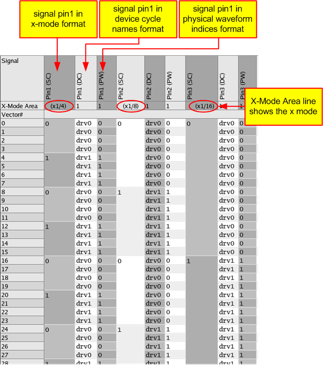

x1/N-mode example
This topic explains the usage of the x1/N-mode on the basis of an example.
In the example described below the base tester rate is 10 MHz (tester cycle). We want to use three different data rates:
- for signal pin1: 2.5 MHz,
- for signal pin2: 1.25 MHz and
- for signal pin3 : 625 kHz.
These data rates can be reached by using the following x-modes:
- for signal pin1: 10 MHz/2.5 MHz = 1/4 > x1/4-mode,
- for signal pin2: 10 MHz/1.25 MHz = 1/8 > x1/8-mode and
- for signal pin3: 10 MHz/625 kHz = 1/16 > x1/16-mode.
The wavetable related to the example is shown below:
WAVETBL mytable
PINS all
0 "d1:F00" drv0
1 "d1:F10" drv1
STATEMAP
#physSeq statechars x-mode selector
0,0,0,0 0 x1/4
1,1,1,1 1 x1/4
0{8} 0 x1/8
1{8} 1 x1/8
0{16} 0 x1/16
1{8} 1 x1/16
The PINS section defines two simple waveforms for all pins.
The STATEMAP section defines the x-modes used in the Pattern Editor. The columns have the following meaning:
- physSeq defines the sequence of the physical waveforms.
In the first line 0,0,0,0 is defined. This means, the waveform 0 defined in the PINS section occurs four times.
In the second line the waveform 1 defined in the PINS section occurs four times.
In the third line the waveform 0 defined in the PINS section occurs eight times, etc.
- statechars defines the state characters displayed in the x-mode format in the Pattern Editor. For a description of the different formats, see Configuring the layout of the Pattern Editor.
- x-mode defines the x-mode used in the Pattern Editor.
- selector is not used in this example.
In the Pattern Explorer shown in the figure below there are for every signal three different columns. Each column displays the signal in a different format:
- in the x-mode format,
- in the device cycle names format and
- in the physical waveform DC/DC power units format.

The device sees x-mode vectors (logic 0 and 1) at different data rates. The logic is represented exactly as the device sees the data and it is possible to edit each x-mode vector individually.
Functional changes
- Introduced before SmarTest 6.3.2